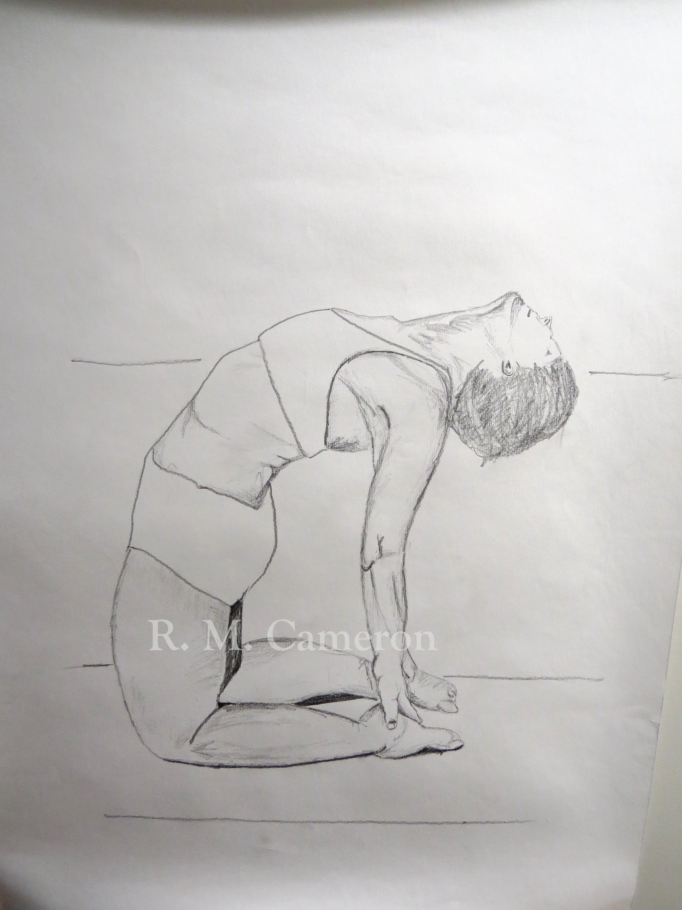
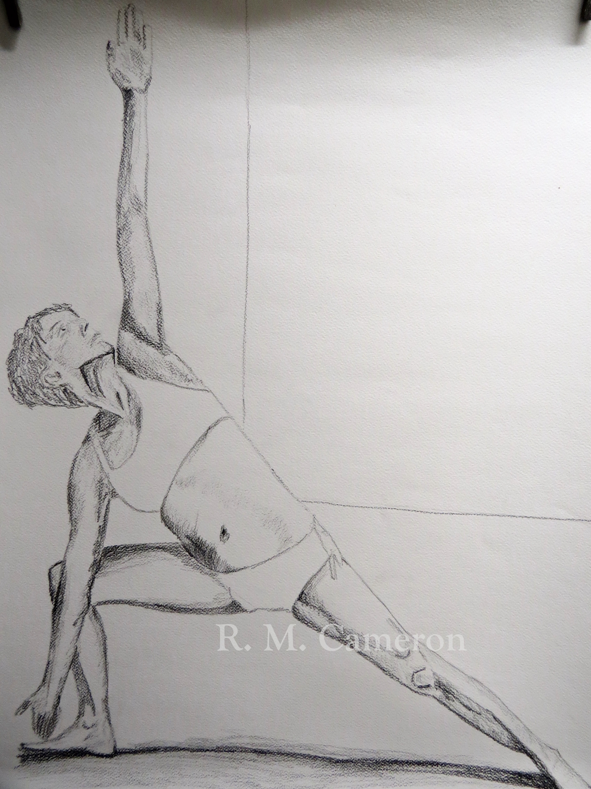
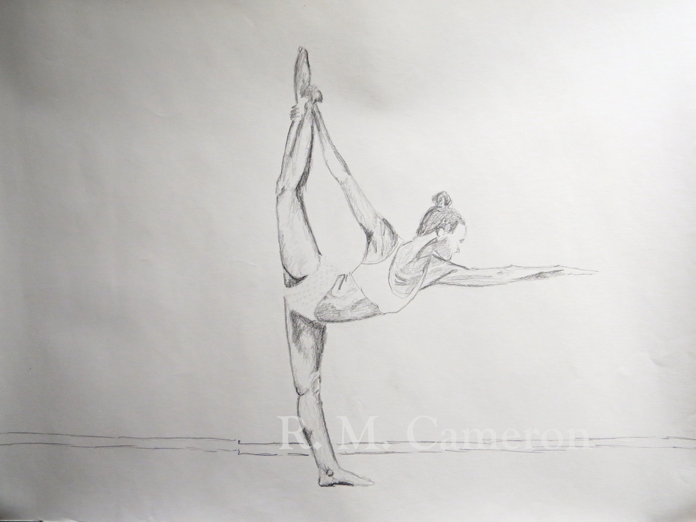
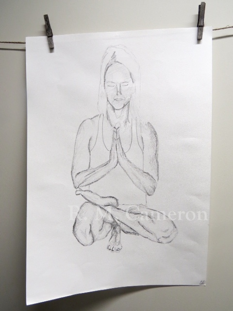

About Hot Yoga Dunedin
Hot Yoga Dunedin offers heated yoga classes for all levels of students. Independently run since 2009, our mission is to provide a welcoming and supportive space to guide you through a transformative and healing yoga practice.
Practicing yoga in a heated environment increases flexibility and mobility of your body. The heat offers therapeutic benefits in revitalising the cells and tissues, and increases blood circulation. This helps to release toxins from your body via the skin.
Our heating system has been specifically engineered to ensure the consistency of the room temperature and humidity within a specific heat index, constant circulation of heated clean air helps promote perspiration and blood flow while constantly exchanging the air within the space so it is always fresh and clean.
Our main style of yoga is Bikram, the original hot yoga. We have also introduced a dynamic Hot Flow style, as well as the more restorative practice of Yin. See below for class descriptions. Check out our live timetable here.
Class Descriptions
Bikram
The original hot yoga! A static sequence of 26 core postures and 2 breathing exercises, designed to systematically stretch, tone and realign every aspect of your being; bringing body, mind and soul into alignment. Be prepared to sweat and be challenged!
*90 minutes duration
**Room heated to 38 degrees with 40% humidity
Hot Flow
Our Flow classes are dynamic with a strong focus on synchronising breath with movement. Using well-balanced creative sequencing, classes are designed to challenge and inspire you both mentally and physically. Walk away feeling energised, balanced and light!
*90 minutes duration
**Room heated to 30 degrees
Yin
Yin yoga is a nourishing and meditative form of yoga which works deep into the connective tissues, fascia and joints. This practice involves long holds in restorative poses to unlock deeply held tension and helps balance our busy “yang” lifestyles by cultivating patience, stillness and deep relaxation.
*60/90 minutes duration (check timetable)
**Room heated to 25 degrees
If you are still unsure which is the best class for you, pop in or email us at the studio to chat with one of our friendly staff!
More information on what to expect and how to prepare for class can be found here.
Teachers
I started practicing yoga with my mother when I was 12. I don't remember much about the first class other than feeling calm and still afterwards. I continued to seek these feelings as I continued through high school and university. In my 20s I worked as a model, in hospitality and travelled a lot. It was a tumultuous time and I would always try find a local yoga studio wherever I was to try and remain calm amongst the storm! I enjoyed Iyengar for it's precision and discovered Jivamukti in New York which was vigorous and sweaty - two things I had never before associated with yoga!
After the birth of my first son Kaia I was in a real rut, I was living in Wellington and bored with the gym stretch class. I found a flyer that said 'Hot body cool mind' and out of curiosity attended my first Bikram class. It was a real struggle and at the time I felt it was not for me. However as I walked home afterwards I felt light and free, both physically and mentally, and I was hooked!
In 2006 I completed an intensive 9 week training with Nikki Knoff in Iyengar and Ashtanga styles. We also studied philosophy, chanting, meditation and anatomy. Despite the rigors of this training I kept up my Bikram practice the whole time.
I started teaching yoga in 2006 and had my second son Zion in 2007. I moved to Queenstown and began teaching at Bikram Yoga Queenstown, a mixed yoga style studio. In 2008 I plucked up the courage to attend Bikram Teacher training in Mexico and I have never looked back. I opened the studio in Dunedin in 2009 and have since trained in the Bikram advanced series, Yin yoga and with many senior teachers. I love what yoga has done for my mind and body and am honoured to teach what I love. See you on the mat soon!
Better late than never! It’s never too late to start practicing yoga.
I found yoga after decades of dedicating my life to teaching Physical Education and Health, being a dedicated gym junkie and a keen sportswoman – the latter resulting in injuries and a gradual decline in my range of motion and the general increase in my level of pain! So I could run a half-marathon with ease but struggled to bend over to put on my socks and undies! I taught others about the benefits of physical activity for health and well-being yet often struggled mentally and emotionally with issues that arose in my life as a mother, wife, teacher and then business owner.
In late 2009, a few days after Donna Wikio opened the studio in Dunedin, I attended my first Bikram class. Something happened that day that changed my life. I practiced daily for 45 days, no longer in pain, my mobility slowly improving and just as importantly, the mental fogginess lifting. I was moving more easily and easier to live with. At the beginning of 2010, with the distressing news of my mother-in-law’s diagnosis of terminal cancer and the exciting news of my first grandchild due later that year; I decided to attend the Spring Teacher Training for Bikram Yoga, held in Las Vegas, for 9 weeks and started teaching for Donna in July 2010.
In 2014 I also started teaching Yin Yoga – a wonderful complementary style to the more Yang Bikram series. Yin and Yang – two sides of the very same coin.
I believe yoga is for everyone. Practiced with an open heart and an open mind, yoga gives you time and space to just “be” – to be the best you can be at any given point in time.
I have always been a physical person - I played sport growing up in South Auckland, completed a Bachelor of Physical Education at Otago University and worked and taught in the Fitness Industry for many years. I was introduced to yoga in 2002 after suffering a back injury, but it wasn't until I found the Bikram series in 2010 that I was hooked. I had no idea of what to expect and no idea of what the benefits to my body, mind and spirit would be. The first few classes were incredibly challenging but as Bikram says "the greatest challenge yields the greatest possibility for change".
I can only explain the change in how I feel by asking you to imagine how different a still and stagnant pond is compared to a flowing glacial river - on all levels, it's incredible. Physically I am different, better. Mentally, I have a clarity of purpose and am stronger in my intention in and out of the yoga room. Spiritually, I've had an epiphany - the only word I can use to describe it. My hope is that everyone will experience the same profound changes that I have - come along to class, stand, sit, listen, watch, do what you have to do, it's all yoga - struggle with us. You have nothing to lose.
My yoga journey started in Scotland (some time ago) and the passion has been maintained by some amazing teachers around the world. I spent a year in India practicing meditation and yoga which developed my passion for balancing mind and body. I obtained my teacher registration in 2008 purely to increase my knowledge of yoga and yet it has led to a teaching role ever since. I am passionate about many different forms of yoga with Yin yoga a particular favourite. Yin maintains the elasticity of our connective tissue which can diminish with physical activity, injury and aging and is very important in maintaining joint health and flexibility as well as calming and restoring energy with awareness of the breath.
My love of yoga stems from its' ability to be a moving meditation. Keeping the body healthy, strong and supple is a great bonus to the clarity a strong practice can bring to the mind and soul.
I have been teaching yoga for fifteen years. My first teachers training in Satchidananda style was completed with Integral Yoga, Australia where I then continued to teach adult and kids yoga at their studio in Melbourne. I then completed my second teachers training with Hot Yoga Wellington, where I managed the studio and taught Yin and Power Vinyasa as well as assisting with subsequent teacher trainings. I’ve run courses for Beginners Courses, Kids Classes, and offered Family Yoga & Women's Workshops as well.
Namaste, I am passionate about sharing the beauty and joy of yoga. Having personally experienced the ongoing healing effects of yoga, a deep gratitude for these teachings, and a desire to share the love of yoga inspired me to travel to India to complete my teachers training with Tribe Yoga in January 2013.
This training was the beginning of a lifelong journey and I have since continued my studies, studying and practicing a variety of yoga styles in Australia, Guatemala, Mexico and India. Classes encourage a meditative Vinyasa Flow, synchronising breath with movement, fused with Kundalini, Hatha and Yin. Through Asana (physical poses), Pranayama (breathing exercises) and Meditation students are encouraged to honour themselves and tune into the needs of their own body in the present moment.
The gift of yoga is an ongoing and evolving practice and every session is an opportunity for both teacher and student to learn and grow together.
I look forward to seeing you on the mat soon!
I was born and grew up in Poland. When I was 19 I moved to live and work in New York. In 2008 I moved again- this time to live and study in London.
I began practising Bikram yoga in 2009 while working part time at one of London’s many Bikram studios. The bug bit and after 5 years’ practice I decided to turn my passion into my job and qualified as a Bikram teacher in 2014.
Since qualifying, I have taught in Bristol, Norwich and London (in the UK) and as a guest teacher in Warsaw, Poland before moving to Dunedin in 2015 for 6 months to teach Bikram and explore life down-under.
I know a fair bit about juicing, nutrition and wellbeing. My next career step is to qualify as a specialist Thai masseur later in 2015.
I speak fluent English and Polish and passable German and Spanish; and I am learning Japanese in order to teach Bikram in Tokyo in 2016.
What to Expect
The word yoga, means to yoke or bind and is often interpreted as “union” of mind, body and soul.
All our classes are based on Hatha yoga which refers to a set of physical exercises (known as asanas or postures). Sequences are designed to work on all aspects of the physical body and to open the energetic channels of the body - so that energy can flow freely.
Yoga emphasises learning through doing. Choosing progress over perfection, do your best each day and observe how you feel. Your teacher is there to guide you, and with respect and compassion will assist you in reaching your full potential.
If you are new to yoga, remember that everyone in the room has been where you are now. Believe in your ability and persevere. We all have to start somewhere!
Bikram
Rooms are heated to 40 degrees celsius with 40% humidity. You will sweat! The 90 minute class starts with a breathing exercise and 45 minutes of standing postures, followed by a 45 minute floor series ending with a breathing exercise.
Bikram yoga classes are for everyone.
Bikram is yoga for beginners! It’s not just for people who are already strong and flexible. If you are sore, unfit, or out of shape, this yoga will help you.
For quick progress come to your first class; take your next one as soon as possible; then come as often as you can.
With perseverance, you will soon notice dramatic changes. You can expect to stabilise your weight, increase flexibility and strength as well as balancing your mood, appetite and sleeping patterns. Detoxification will also occur resulting in higher energy levels, glowing skin and so much more.
To quote Bikram’s guru, Bishnu Charan Ghosh: ‘It’s never too late, you’re never too old, you’re never too sick, to start from scratch once again.’
Approach your practice with 100% effort, and you will receive 100% of the benefits!
During class we ask that you stay in the hot room.
To ensure a safe and quality experience try to stay in the room until the teacher has signalled the end of class. The final resting pose of savasana is essential for completing and integrating your practice.
Naturally you are welcome to rest at any time, make your way down to your mat and join back in when you are ready.
What to wear.
Dress in clothes that let your skin breathe – no long sleeves or pants. Most regulars wear the equivalent of hot pants, halter tops and swimming trunks.
The fewer clothes you wear, the better your skin can breathe and the more benefit you’ll receive from the hot room.
Did you know that your skin is your body’s primary organ of detoxification? Covering it up in long pants and sleeves is uncomfortable and defeats the purpose of sweating.
Bikram is not a competition: work to your ‘edge’ but not beyond it.
Almost everyone feels challenged during their first Bikram class.We are all unique and no two days are the same. Listen to your body, work to your limit and never push past your edge.
If you need to rest, please do. Your body is going through a detoxification process and it’s normal to feel dizzy or nauseated during your first few classes.
What to bring.
Bring a yoga mat and a large bath towel – no tiny hand towels please.
Large towels are placed over your mat to soak up the sweat and prevent you slipping. Bring an extra towel if you want to shower at the studio after class. A water bottle will also come in handy!
Mat and towel hire are available for $1 and $2 respectively. All proceeds from mat hire are donated to charity.
Hot Flow
Hot Flow classes are moderately hot.
Rooms are heated to 30 degrees celsius. Expect to sweat!
Hot Flow classes are for everyone.
A Hot Flow class is both a great place to start and to continue challenging yourself. Linking movement with breath, known as vinyasa, all movements can be adapted to suit all levels.
Classes vary in focus from class to class and can include physical postures (standing and seated), breath work, meditation and deep relaxation.
During class we ask that you stay in the hot room.
To ensure a safe and quality experience try to stay in the room until the teacher has signalled the end of class. The final resting pose of savasana is essential for completing and integrating your practice.
Naturally you are welcome to rest at any time, make your way down to your mat and join back in when you are ready.
What to wear.
Wear comfortable clothing which allows you to flow from one pose to another. You will work up a sweat so wear something breathable and moisture wicking.
Hot Flow is not a competition: work to your ‘edge’ but not beyond it.
We are all unique and no two days are the same. Listen to your body, work to your limit and never push past your edge.
If you need to rest, please do. Your body is going through a detoxification process and it’s normal to feel dizzy or nauseated during your first few classes.
What to bring.
Bring a yoga mat, a sweat towel and water.
Mat and towel hire are available for $1 and $2 respectively. All proceeds from mat hire are donated to charity.
Yin
Yin classes are warm.
Rooms are heated to 25 degrees celsius. A comfortable room temperature.
Yin yoga classes are for everyone.
Yin classes are meditative and therapeutic and perfect for anyone wanting to surrender, release and let go. Classes are done on the floor and involve holding poses for 3-5 minutes allowing time for tension to release in the connective tissues, ligaments and joints.
This class complements the energetic ‘yang’ styles of yoga to help balance an active lifestyle.
What to wear.
Wear comfortable clothing that allows you to move.
What to bring.
Bring a yoga mat and water.
Mat hire available for $1. All proceeds from mat hire are donated to charity.
How to prepare
Drink plenty of water before yoga class. Hydration is essential.
It takes at least 45 minutes for any water you drink to be processed within your body, so drink up before class!
Eat at least two hours before class.
Yoga is best practiced on an empty stomach. However, you know your body and its needs best, but generally try not to eat at least two hours before class.
Latecomers are not admitted once class starts.
For security purposes, studio doors close when class starts. This also maintains the flow of the class and prevents others from having their experience disrupted. Please allow at least 15 minutes before class to sign in and get settled.
Parking is available at the Meridian Mall and Wall Street car park until 8pm.
Parking on the street is free on Sundays.
Testimonials
"Hi, I am Steve, 64 years old. My sporting background is triathalons. I have been competive for over 25 years and I am one of the lucky ones, as I have never been injured."
It was always my intention to take up yoga in my sixties. I found Bikram Dunedin online and started classes 6 months ago. I was fit and felt great to start with, it took 2 months to notice a change. ! But boy what a change !
I feel stronger particularly around the torso, taller, lighter and of course more flexible. I highly recommend Bikram for cross-training. Injured athletes will heal, and times will probably improve. A big thank you to Donna and the team at Bikram Dunedin. You make people BETTER.
– Steven Morrison
"As a guy who played rugby for 25 years my body is a mess of injuries"
I received physiotherapy for five years, treating a serious back injury. But I continued to suffer daily back pain. Bikram yoga has been the best way I’ve found to treat these injuries and relieve the ongoing pain. I only wish that I had found it during my playing years as I believe that Bikram is a powerful injury prevention and rehabilitation tool. Not to mention, a great workout which focuses on strength and fitness as well as flexibility and balance. I highly recommend practicing Bikram yoga to all sportspeople, including former and current rugby players.
– Rueben
"I first went to Bikram yoga to lose weight and tone up. I thought that yoga was for flexible people – and I couldn’t even touch my toes!"
However, Bikram yoga helped me to improve my flexibility, lose weight, and tone up. It also helped improve my mental concentration and stress levels. I have done Bikram yoga for a number of years now, in different places. I did Bikram during my three pregnancies – it helped to even my mood, and stopped me from getting back pain and other pains associated with pregnancy. Importantly, it even got me back into my pre-pregnancy jeans after giving birth! I highly recommend Bikram yoga and I am stoked that there is a studio in Dunedin.
– Moana Theodore
At 50, and a wee bit more, I discovered Bikram Yoga through someone writing on my Facebook “… survived a Bikram Yoga class”
Now those simple words were the challenge for me. I’ve never clicked with Yoga as I’ve always liked high energy exercise, but the word “survival” sent me searching the web to find out about BYD. I went to my first class with no preconceived ideas as to what it could do for me, but absolutely loved the feeling of sweat literally pouring from my body, and was walking on air immediately after my first class with such a good feeling (like I had been detoxified). After 3 sessions, a long standing impact injury (deep in my right butt) disappeared. This is after years and years (20 in fact) of physio and brief stints at rest from running (where I felt pain with every step) to relieve it. I’ve never been able to shake it – till now. I’m feeling incredibly strong running now – no pain -and overall heaps more energized day to day due to BY. I’m eating better, have more glowing skin, and after about 8 years of interrupted sleep, consolidated sleep is gradually returning. Love it and never want to give it up! Every session is a new challenge for me, whether it be just gaining a little more flexibility on the “go back, way back”, or balancing for a second longer…I’m hooked.
– Barbara Galland
"Bikram yoga has helped me mentally and physically"
I’ve noticed that when I practise regularly I am a happier and more relaxed person, and find it easier to focus. Physically, I have become more flexible and lean. Going to class is an awesome way for me to escape anything that is dragging me down and dedicate my full attention to improving every posture to get the best possible benefits from Bikram!
– Anna
"Over the past two months since I begun to “see where it would take me” my posture, strength and balance has improved remarkably as my body shape changes"
I have learnt tools to relax physically and mentally and now sleep soundly. (52 year old overweight female)
– Ros Fitzgerald
"Bikram yoga has changed so many aspects of my life that I can barely even remember what it was like before I started!"
Before the Dunedin studio opened I was in a total rut: physically, I was unhappy with my eating habits and body, bored with my exercise routine, and I felt like I was actually losing ground instead of gaining it. Psychologically and emotionally I was pretty down too: I felt isolated, lonely, and lethargic most days, which is not at all like me! Then Bikram came along … and something about it – the heat, the massive physical and psychological challenge, the people, the teachers – kickstarted me into waking up again. Now I feel like I’m back in touch with who I really am: physically, I feel fit, flexible, strong, and appreciative of my body; psychologically and emotionally, I feel happy, optimistic, centered, and incredibly grateful. I honestly believe that Bikram yoga is the key that helped me wake up and come alive again. (Plus, even in the coldest of Dunedin winters, I’m guaranteed at least 90 minutes of glorious, sweat-drenched heat every single day – which does a lot for my state of mind!)
– Angela
"Bikram has improved my health dramatically since I have started going"
I have asthma but since going to Bikram I have been put on 1/3 of the dose of medication I previously had to take, and also I can now run outside without any breathing problems – something I never used to be able to do and that I have longed to do, being a person who loves running. Bikram has taught me patience and how important breath is and how, with persistence, you can achieve anything. It is fantastic to now have less toxins in my body from medication and be helping myself in a natural way. My flexibility has also increased and I am no longer afraid to try new things. There is no going back now, I am happy to have Bikram as part of my life.
– Corinna
"After repetitive injuries I needed a form of exercise that would strengthen but until I found Bikram I always felt bored and lost motivation if my exercise wasn’t high impact. I’m not bored yet!!"
The more I learn the more I can challenge myself. Every class clears my mind and leaves me restored and detoxified and there’s no more neck and shoulder stiffness at work. Plus – my arms and back look great and after 2 ½ months certain areas I gave up on years ago have started to change shape .
– Rebecca
"I Never Thought I’d Like Yoga – But This Is Aces!"
I have done running and swimming for fitness for years. I have been doing Bikram for only 2 months, but so far I can see it leaves me feeling unlike any other exercise has. I wouldn’t say it’s a feeling of euphoria, but I just can’t wait until I go back to the studio for my next class. I really enjoy the fact that every time you go to a class, you are there to improve upon the previous one. For most other forms of exercise, I’d say doing exactly the same routine every day gets tired. But at least as a beginner in Bikram, it seems as if there is a lot of scope for doing deeper stretches and being able to hold a pose longer. I’m not at all into beatnik spirituality and yoga is not really something I ever thought that I would really enjoy, but it’s aces.
Bikram takes you to a place of pure bliss.
To face yourself, your body, your busy mind. I love it and know that Bikram will be a part of my life forever. I hope that everyone in time takes the time to give it a go. The world would be a better place.
– Anon
Facilities
Changing rooms
Women's and men's changing rooms include mirrors and hair dryers. There are also three unisex showers available.
Hydrate
Free filtered water is available, please bring your own bottle or pick up a refillable bottle from our shop. Alternatively we do sell water and coconut water.
Shop
We have a selection of yoga clothing, mats and books and organic skin care for sale.
Hire
Mat and towel hire are available for $1 and $2 respectively. All proceeds from mat hire are donated to charity.
Heating
We have two heating systems. The main system uses forced air and a humidifier and is kept at a constant level. Our second heat system, used for Flow and Yin is comprised of infrared heaters designed to heat bodies rather than the whole room.
Carpets
Our flotex antimicrobial carpet is designed to be antibacterial (used in hospitals) and is steam cleaned weekly.
Cleaning
Our studio is cleaned daily.
Giving Back
Hot Yoga Dunedin believes in giving back to the community and supporting those in need. All proceeds from mat hire and fundraising events are donated to charity.
So far we have donated over $8500 to the following causes:
| Cause | Donation |
|---|---|
| Breast Cancer awareness | $300 |
| Vulnerable children in Thailand, Burma and Papua New Guinea | $310 |
| Fundraiser for Kids Can, Dunedin dog rescue, Otago rescue helicopter & Dunedin women’s refuge | $3216 |
| Kids Can | $700 |
| Yoga Stops Traffic | $460 |
| Samoan Tsunami Relief | $150 |
| Dunedin Women’s Refuge | $1000 |
| NZ Yoga Federation | $1600 |
| Yoga in Prisons Trust | $150 |
| Sacred Heart School | $50 |
| Queensland Disaster Relief Fund | $270 |